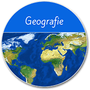

Lebens und Wirtschaftsraum Erde
1. Gunst- und Ungunsträume
1. Gunst- und Ungunsträume - Interaktive Map
1.1. Österreich – Hochgebirge
1.1. Österreich Hochgebirge_Interaktiv
1.2. Ägypten – Nil
2. Bevölkerungsverteilung auf der Erde
3. Wie Städte entstehen - Vom Dorf zur Stadt
3.1. Stadttypen
3.2.Landflucht - Interaktiv
3.3. Stadtwachstum – Stadtentwicklung
Work in Progress (Nur mehr 1 Interaktiver Part fehlt!)